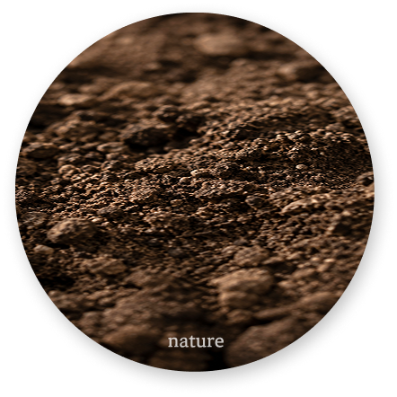
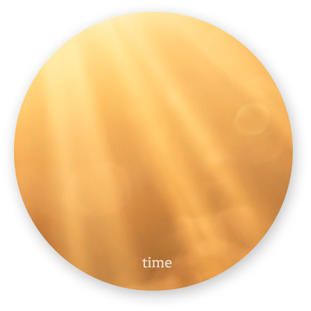
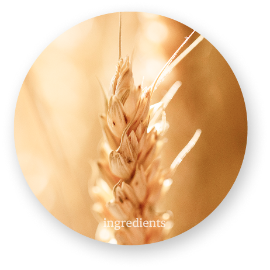
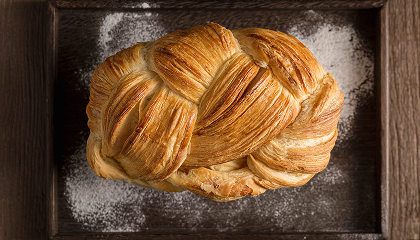

GROWN BY NATURE
자연에서 시작된 좋은 재료가
정직한 시간과 정성을 만나
건강한 한 끼의 행복으로 완성됩니다.

THE TASTE BEGINS WITH NATURE
맛의 시작은, 좋은 재료에서부터



좋은 재료는 서두르지 않습니다.
자연이 천천히 길러낸 재료와 충분한 시간,
더 나은 한입을 위한 모르사의 섬세한 기준.
맛과 건강 어느 하나 놓치지 않는 빵을 만듭니다.
MORSA’S BALANCE
맛있으니까, 더 좋은 선택이어야 하니까.
모르사는 좋은 재료가 가진 본연의 맛을 살리고,
불필요한 부담은 덜어내는 방법을 고민합니다.

FROM GOOD INGREDIENTS
햇살과 바람을 지나 천천히 여문 곡물에는
자연이 빚어 올린 고유한 맛과 향이 담겨 있습니다.
MORSA는 좋은 재료가 가진 본연의 풍미를 살려
시간이 만들어낸 깊은 맛을 끌어 담아 냅니다.
NATURAL FLAVOR
충분한 햇살 아래 제철을 맞은 과일은
가장 자연스러운 단맛과 향을 품습니다.
MORSA는 재료가 가장 맛있는 순간을 골라
과하지 않은 풍미를 빵에 담아냅니다.
CRAFTED WITH CARE
좋은 재료에 마음을 그대로 기울이기 위해
천천히 반죽하고 정성스럽게 구워냅니다.
MORSA는 서두르지 만드는 과정까지 세심하게 고민해
맛과 건강의 균형을 완성합니다.